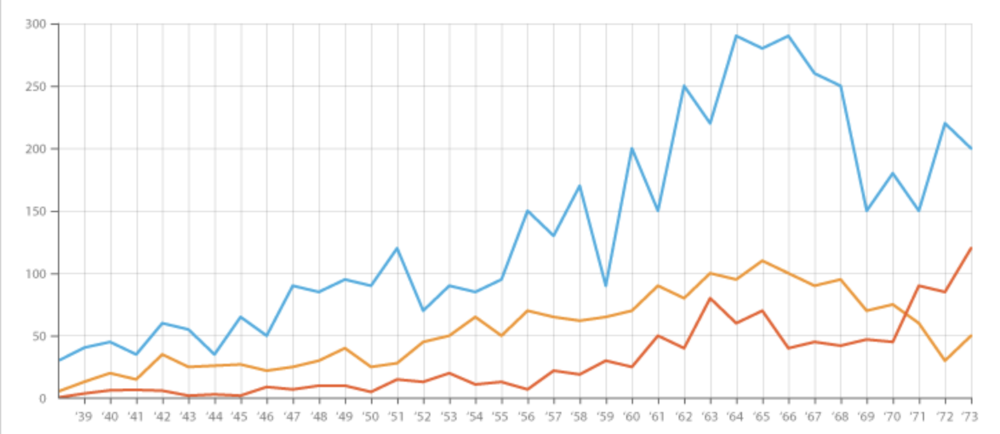

Visualizing Time Series Data with Tableau
Time Series data is basically what it sounds like - data that is sequentially arranged over time with equal spacing, normally visualized in a form of a line graph. Time Series data is used frequently in research, economics, business and pretty much every other discipline to showcase how your target information changes over a certain duration. One important note is that you have to be aware of the level of detail that you can accurately visualize, as well as make a decision about what to do with missing data. I won't go into the details of date imputation (filling in missing data), but in the line graph below there are three separate outputs for each year. If your data is collected at the yearly level, then you could aggregate the data (Tableau makes this easy) to take a measure over five-year spans, but you could not break the information down to the month or day level. While this might sound obvious, there have been numerous cases where even the most stringent research was derailed by trying to provide more detail than is possible.
Most software in the field of data analysis has visualization capabilities, but Tableau does a great job of making data accessible and understandable. As long as your data is relatively well-formatted, you can drag it in and immediately build stunning interactive charts. For the more experienced programmers and data scientists, there is complex functionality, although I typically do not do modeling or big calculations in Tableau - I send just the information that I need to Tableau to create a finished product. As far as downsides, cost and ownership of your work is an issue, as you are working in Tableau's ecosystem. In this case, I am not using sensitive data, so I published each dashboard to the Tableau Public site and embedded the visual in the website. If I was using customer data, I would have to use Tableau's controlled environment.
With that, let's get started with some interesting ways of visualizing Time Series. By no means is this an exhaustive list, and if you don't think some of these visuals are useful, don't use them. We're not going to discuss the math behind Time Series Modeling (prediction using ANOVA or ETS models), just ways to understand your data in the context of time. The beauty of Tableau is that you can build some of these as a template and port in your own information.
Sales vs. % Difference
This is one of my favorite Time Series visuals. On the top portion you have the sales figure and on the bottom you have the percentage change in in sales for each interval. In the percent change portion, the magnitude of the sales is shown by the size and color (dark blue, thick lines indicates relatively high sales, while red, thin lines indicate relatively low sales). While looking at either one of these separately (or even more difficult, in a chart), it's difficult to grasp the full story. Look at March 2016 - The percent change is steep, at 31.2%, but the sales figure shows a relatively modest jump from $87k to $114. This is because the sales in the month before was at a low point, so even modest increase in sales will have an exaggerated percentage increase. By contrast, January is following a high-point (December 2015) and continues to increase at a modest 3.2%, which is still great - yet the % difference chart shows that growth is starting to recede. This dashboard works together to provide a full picture of the change in data.

Adjustable Moving Average
One of the great things about Tableau is the easy use of parameters, toggles and user inputs. On the right-hand side, you can adjust the number of months to modify the moving average, seen in the graph as the solitary red line. Especially in very chaotic, shifting time-series data, it's often useful to understand how each point relates to historical data. For instance, certain stocks have high variability - by showing the moving average over time, it's much easier to get a grasp how your position on the stock compares to trend. You can play around with the slider function, where setting it to 1 follows the data exactly (the average matches the time change), while including more months smooths the average. If you set the number of months to one and click the asking whether to add the current value, you can see the average shifts by one iteration. This is a great way to compare fast-changing data to history.

Moving Average with Date Parameters
This is the same concept as above, but with some different ways of filtering the data. Note that the tooltip information (hover over the data) indicates that the average is fixed at a 20-day moving average, but the filters on the right allow you to focus in on certain time periods.

Running Total with Forecast Parameter
This dashboard includes a parameter that creates a fork in the data at a point in time, as well as a percentage difference from the measured / predicted values. You could use this with a long-term forecast, or see the historical impact of what would have happened had another decision been made. I've tweaked it to be a mortgage payoff calculator and used it in a 'what-if' scenario, but I'm sure there are some other uses to this dashboard.

Average Vertical Line Graph
I love this modified 'waterfall' chart. Each blue line includes all measured points within the date segment (note you can expand by clicking on the bottom left-hand corner). In the starting view, each vertical blue line represents all the days of the month - if you hover over the points, January 2011 has a max of $1,413 on the third day of the month and a minimum of $1,255 on the 28th day of the month. With this graph, you get the daily breakdown and can quickly identify swings in the context of other months. In a traditional line graph, you either lose context because all the information is grouped together at the monthly level, or you expand it to the daily level but get innundated with movement. This is an excellent way to condense the data while still including context.

Running Total per Month
Especially if you're trying to understand seasonal information, it can be helpful to create small multiples that put each individual month into context. On the top is the running sum of sales (cumulative, so it will continue to increase throughout the month), while the bottom area graph illustrates the value of the difference. Each year is differentiated by color, and the information starts fresh each month. In March, you can see that the all years increase at the same level until the average point, but 2015 sales gains a slight increase over 2016 which it maintains until the end of the month. In the difference chart, you can see this by the fact that 2016 goes negative about halfway through the month. This segmentation helps decision-making as it breaks up each element for isolated analysis.

30-Day Moving Average
Same overall concept, but .

Dynamic Date Filters
Add Info

Running Total Over year
Add Info.

f
More Info.

Conclusion
Tableau is a great way to quickly put together some visuals and explore your data. Combined with an engineering .